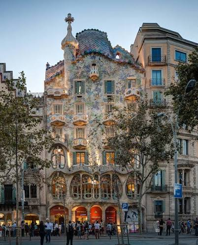

Casa Batlló
Von den Locals liebevoll "Casa dels Ossos" genannt – das Haus der Knochen. Eine Fassade, die aussieht, als würde sie atmen: Knochen-Säulen, schädelförmige Balkone, ein schuppiges Dach wie der Rücken eines schlafenden Drachens.

Geschichte
Das Gebäude stand schon 1877, doch die Familie Batlló beauftragte Gaudí 1904–1906 mit einer kompletten Neugestaltung. Seit 1993 gehört das Haus der Familie Bernat, die es der Öffentlichkeit zugänglich gemacht hat.
Warum besonders
Die gängigste Deutung: Die gesamte Fassade ist eine dreidimensionale Nacherzählung der Sant-Jordi-Legende (Kataloniens Schutzpatron, der einen Drachen besiegt) – das schuppige Dach ist der Drachenrücken, das Türmchen mit dem vierarmigen Kreuz das Schwert "Ascalon", das hineingestoßen wird, die schädelförmigen Balkone die Opfer des Drachens.
Praktische Hinweise
Euer Termin: Mittwoch, 02.09.2026, 09:30 Uhr, Gold-Ticket (82 € gesamt) – inklusive Dragon-Dachterrasse, AR-Tablet-Tour, Gaudí-Kuppel, Concierge Room und private Batlló-Wohnung. Adresse Passeig de Gràcia 43, 5 Gehminuten vom Hotel. Als einzige Sehenswürdigkeit dieser Reise stellt Casa Batlló ein Tablet mit AR-Führung direkt am Eingang zur Verfügung – kein eigenes Handy nötig.